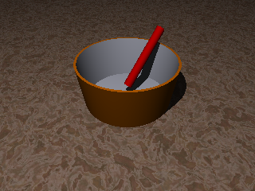

Les transformations géométriques de base sont présentes dans POVRay : translations, rotations, changement d'échelle.
L'outil de base pour représenter les transformations est la matrice.
 Écrivez dans un fichier nommé cuve2.pov, le script permettant de créer cette image, dans laquelle un bâton rouge a été ajouté à votre scène précédente. Celui-ci est modélisé à l'aide d'un cylindre et positionné à l'aide de transformations. Vous ferez en sorte que l'extrémité basse du bâton ne repose pas dans le fond de la cuve.